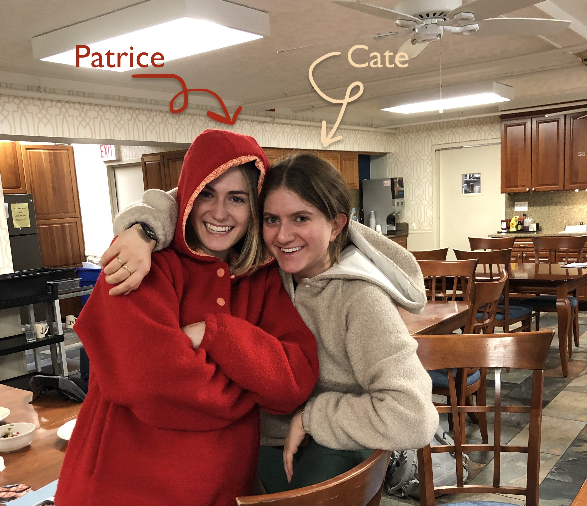

The podcast
As members of Form and Function Marketing, Northwestern University's only student-run marketing agency, Cate and I discuss interesting spots and industry news during our weekly meetings. These discussions are often quite vibrant and thought-provoking.
We came to the conclusion that we might have peers, friends, or family outside of F&F who would enjoy entering into these conversations with us weekly.
Thus, In My Humble Opinion was born.
Together Cate and I are amatuer marketing strategists and brand fanatics who decided to document our marketing tête-à-têtes. We talk about brand crushes, the latest marketing stunts, and everything in between from our humble sound studio also known as my dorm room.
We hope you enjoy it and hopefully learn something new!
